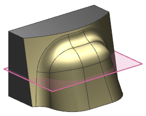
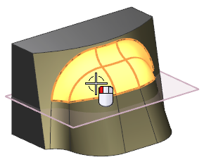
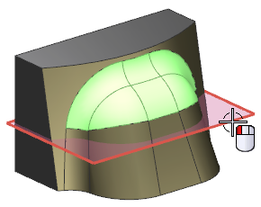
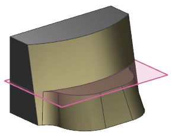

Cap Face
-
In the Part Navigator, right-click Datum Plane (1) and choose Show.

-
On the Synchronous Modeling toolbar, click Delete Face
 .
.
-
In the Settings group, make sure the Heal
 check box is selected.
check box is selected.
-
Select the six faces shown.

The Alert messages provide clues to identify the error condition and offer potential solutions.
-
In the Delete Face dialog box, in the Cap Face group, click Select Face
 .
.
-
Select the datum plane as shown.

-
Click OK.
The six faces are deleted and the neighboring faces are trimmed to the datum plane.

-
Close the part now or close all parts when you exit the session.